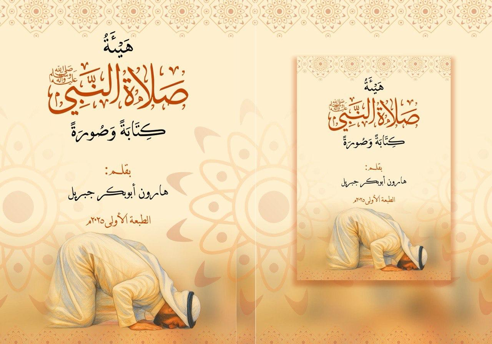

تأليف: هارون أبوبكر جبريل (Harun Abubakar Jibril)

اختر لغتك من شريط الترجمة بأعلى الصفحة لترجمة نص الكتاب كاملاً تلقائياً.
Select Hausa or English from the top translation bar to translate the full book below.
الحمد لله رب العالمين، والصلاة والسلام على أشرف الأنبياء والمرسلين نبينا محمد وعلى آله وصحبه أجمعين. أقدم لكم في هذا الكتاب بيان هيئة وصفة صلاة النبي صلى الله عليه وسلم بالدليل والشرح المبسط كتابةً وصورةً...
إذا قام المسلم إلى الصلاة، فإنه يستقبل القبلة (الكعبة المشرفة) أينما كان، بجميع بدنه، مخلصاً نيته لله تعالى في الصلاة التي يريد أن يصليها...
ثم يكبر قائلاً: (الله أكبر)، ويرفع يديه حذو منكبيه أو أذنيه، ويبسط أصابعهما، ثم يضع يده اليمنى على يده اليسرى على صدره...
ثم يكبر ويركع حتى يطمئن ركوعاً، ويضع يديه على ركبتيه مفرجتي الأصابع، ويقول: (سبحان ربي العظيم) ثلاث مرات...